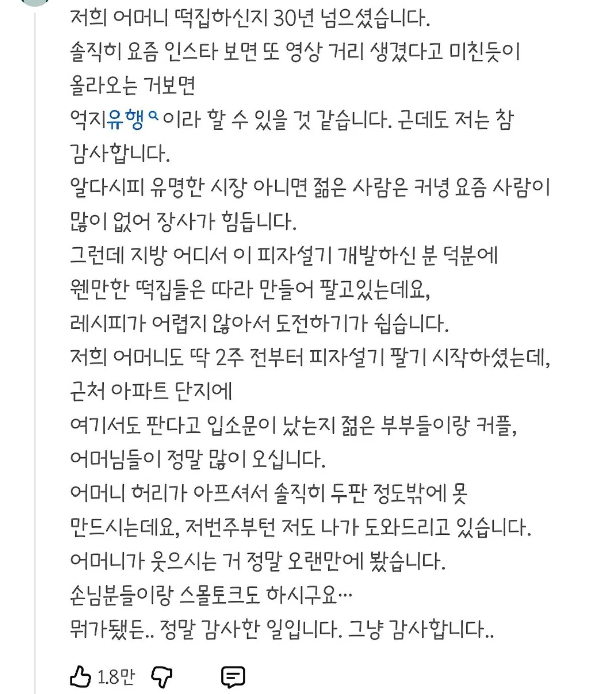

억지유행의 순효과.jpg
댓글
집근처 시장 떡집좀 둘러볼까
피자설기 가격 국룰 어떻게 되냐? 인터넷에선 1500이라는데 집근처는 2000이야
국룰이 2천원
2천원이면 피자빵보다 싸거나 비슷하네 먹을만하겠다
근데 좀 작아서 감질맛나긴 하겠드라. 인천 부평시장인가.어디는 한개 2천원 두개3천원인가 하는거같드만
걍 적정 선 인거 같음 ㅋㅋ 근데 거기서 이제 넘어버리면 망하는거조
개꿀
피자설기는 억지유행이 아니라 혁신이지
피자설기 맛있나
요즘은 또 이게 유행이냐
늙크크인가봐 첨들음 ㅠ
일단 가격부터 호감임 피자설기는